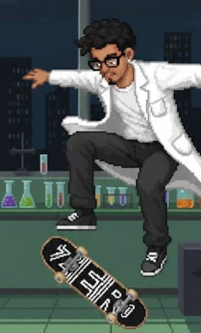

Nome: João Marcelo Amaral
Endereço para acessar este CV: http://lattes.cnpq.br/0602908386717555
Nome em citações bibliográficas: AMARAL, J.;AMARAL, J.M.
País de Nacionalidade: Brasil
Formação acadêmica/titulação:
2021 Graduação em andamento em Biotecnologia. Universidade de Brasília, UnB, Brasil.
2015 - 2020 Ensino Médio (2º grau). Colegio Militar Tiradentes, CMT, Brasil.
Formação Complementar:
Python Fundamental 1. (Carga horária: 20h). Instituto Federal de Santa Catarina, IFSC, Brasil. 2025 - 2025
Banco de Dados 1: Fundamentos. (Carga horária: 20h). Instituto Federal de Educação, Ciência e Tecnologia do Rio Grande do Sul, IFRS, Brasil. 2025 - 2025
Extensão universitária em Cérebro em ação: Neurociências explorando fronteiras. (Carga horária: 20h). Universidade de Brasília, UnB, Brasil. 2024 - 2024
Conservação Ambiental. (Carga horária: 60h). Instituto Federal de Educação, Ciência e Tecnologia do Rio Grande do Sul, IFRS, Brasil. 2024 - 2024
Fisiologia Vegetal. (Carga horária: 20h). Instituto Federal de Educação, Ciência e Tecnologia do Rio Grande do Sul, IFRS, Brasil. 2024 - 2024
Geologia Ambiental. (Carga horária: 30h). Instituto Federal de Educação, Ciência e Tecnologia do Rio Grande do Sul, IFRS, Brasil. 2024 - 2024
Olericultura. (Carga horária: 30h). Instituto Federal de Educação, Ciência e Tecnologia do Rio Grande do Sul, IFRS, Brasil. 2024 - 2024
Solos. (Carga horária: 30h). Instituto Federal de Educação, Ciência e Tecnologia do Rio Grande do Sul, IFRS, Brasil. 2024 - 2024
Biotecnologia em foco. (Carga horária: 8h). Universidade de Brasília, UnB, Brasil. 2021-2021
Genética do câncer. (Carga horária: 8h). Universidade de Brasília, UnB, Brasil. 2021-2021
Controle genético de doenças de plantas. (Carga horária: 4h). Universidade de Brasília, UnB, Brasil. 2021-2021
Projetos de pesquisa:
2022 - 2024 Entomotrópicos - Ecologia, biodiversidade e serviços ecossistêmicos de insetos tropicais Descrição: O grupo entromotrópicos vem desenvolvendo pesquisas de base e aplicadas sobre manejo, conservação, manutenção e uso de insetos e seus serviços ecossistêmicos associados em ambientes naturais e antropizados, incluindo a interação entre ambos. Os trabalhos gerados pelo grupo incluem diversas áreas integradoras do conhecimento que vão de taxonomia básica a ecologia molecular, tendo as interações ecológicas, biodiversidade e ecologia como áreas nucleadoras dos projetos desenvolvidos e em desenvolvimento. Os trabalhos do grupo são publicados principalmente em periódicos internacionais especializados de alto impacto, mas também com grande aplicabilidade em sistemas ecológicos diversos. Os estudantes envolvidos no grupo interagem com diversas áreas de atuação em uma perspectiva multidisciplinar, contribuindo para a formação de recursos humanos qualificados para atuação em diferentes áreas e setores da sociedade.. Situação: Concluído; Natureza: Pesquisa. Alunos envolvidos: Graduação: (1) / Mestrado acadêmico: (3) / Doutorado: (21) . Integrantes: João Marcelo De Souza Amaral - Integrante / Fabio A. G. S. Cavalcanti - Integrante / Rosana Tidon - Integrante / Pedro Henrique Brum Togni - Coordenador / José Pedro Cavalcante Viana - Integrante.
2022 - 2025 Drosofilídeos (Insecta) como ferramentas para a Biologia da Conservação Descrição: Este grupo investiga moscas da família Drosophilidae no Cerrado, desde 1996. Os dados obtidos corroboram que esses insetos - já consagrados como modelos biologia experimental - fornecem também importantes subsídios para o manejo e conservação da biodiversidade. O monitoramento de drosofilídeos (PELD) contribui para o entendimento da dinâmica de populações e comunidades e, junto com outros dados para a elaboração de propostas de manejo e conservação (INCT). Em particular, as comunidades dessas moscas estão sendo consolidadas como bioindicadores ambientais, e resultando em parcerias produtivas com outras universidades e órgãos gestores. Finalmente, a comparação de atributos biológicos entre espécies amplamente distribuídas/generalistas com aquelas de distribuição restrita/especialistas proporciona um melhor entendimento da dinâmica das invasões biológicas e homogeneização biótica.. Situação: Em andamento; Natureza: Pesquisa. Alunos envolvidos: Graduação: (3) / Mestrado acadêmico: (3) / Doutorado: (5) .
Integrantes: João Marcelo De Souza Amaral - Integrante / Lais Barbosa Ribeiro - Integrante / Fabio A. G. S. Cavalcanti - Integrante / Rosana Tidon - Coordenador / José Pedro Cavalcante Viana - Integrante / Laís radaelli - Integrante. .
Idiomas:
Inglês Compreende Bem, Fala Bem, Lê Bem, Escreve Bem.
Espanhol Compreende Razoavelmente, Fala Pouco, Lê Razoavelmente, Escreve Razoavelmente
Projetos de extensão
2025 - Atual NeuroTechX Brazilian Chapter Descrição: A NeuroTechX é uma organização internacional dedicada ao avanço da neurotecnologia por meio da integração entre neurociência, engenharia e ciência de dados. O capítulo brasileiro atua na promoção dessa interdisciplinaridade, reunindo estudantes, pesquisadores e profissionais de diversas áreas para desenvolver projetos, difundir conhecimento técnico e científico, organizar eventos e fomentar o debate ético e social sobre o uso de tecnologias neurais no país.. Situação: Em andamento; Natureza: Extensão. Alunos envolvidos: Graduação: (5) / Mestrado acadêmico: (5) / Doutorado: (1) .
Integrantes: Bruna Carvalho Fernandes - Integrante / Anna Julia Pereira Oliveira - Integrante / José Henrique Bezerra Cândido - Integrante.
Produções:
Trabalhos completos publicados em anais de congressos
VIANA, J. P. C. ; CAVALCANTI, F. A. G. S. ; SANTOS, R. A .R ; AMARAL, J. ; TIDON, R. . Urban fruits play a fundamental role in maintaining populations of Drosophila nasuta (Diptera, Drosophilidae). In: SEGEDXII, 2024, São Paulo. Urban fruits play a fundamental role in maintaining populations of Drosophila nasuta (Diptera, Drosophilidae), 2024. p. 49-49.
AMARAL, J. ; VIANA, J. P. C. ; SANTOS, R. A .R ; REIS, C. H. S. ; TIDON, R. . Drosophilids (Diptera) associated with fruit in the Federal District. In: SEGEDXII, 2024, São Paulo. Drosophilids (Diptera) associated with fruit in the Federal District, 2024. p. 36-36.
Artigos aceitos para publicação